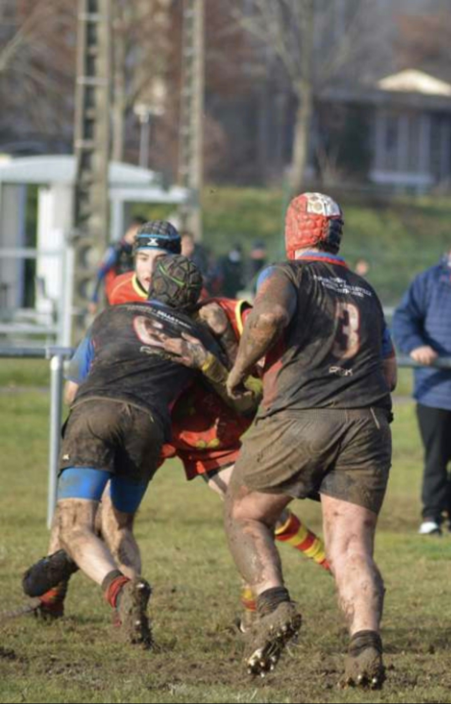
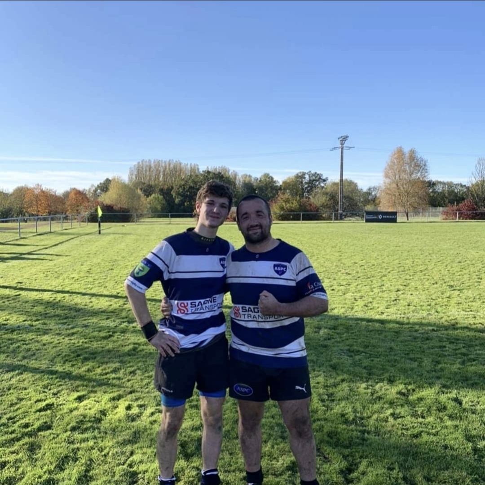
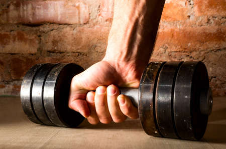
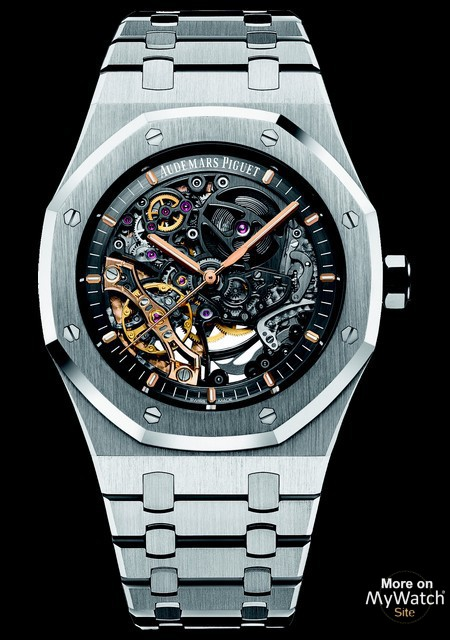
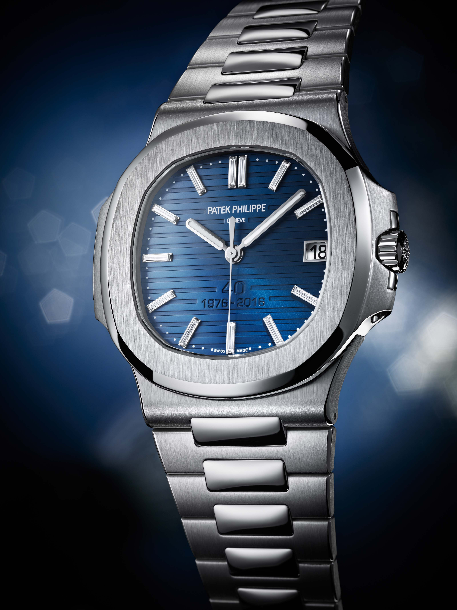
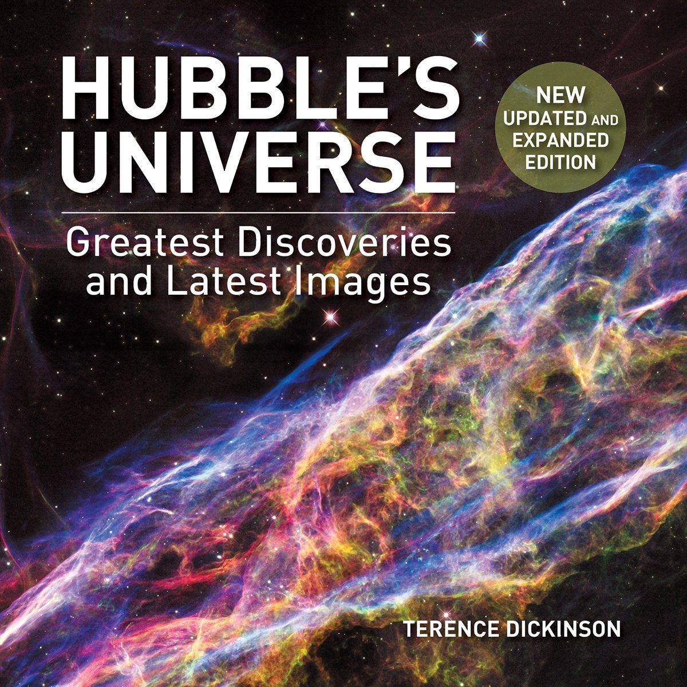

My hobbies
Rugby/Bodybuilding
   I have a real passion for rugby, I have been doing it for about four years and I especially like the values shared in this sport. I do it on weekends when I have time to come home because my matches are in Bourgogne. As said in my CV, I like spending time with my team or with the seniors and do volunteering. I also like bodybuilding that I started a shorter time but which allows me to have sport once a week by having a gym in Roanne. In reality, I like sport in general (athletics, football, volleyball, etc.)
Cybersecurity/Thriller
I also like to read books on cybersecurity to document myself and learn all kinds of things
related to this, whether it's IT, the important people who have contributed to the improvement of this faculty
or the network etc ... I also like to read thrillers outside of class, on the train for example or in the evening
to relax and do something other than classes and sports.
Watches


Watches and the field of watchmaking also interest me a lot. I own a few watches that I make
the collection even if those presented just above are much more expensive and rare than mine.
The visible mechanisms are, I find, beautiful to look at and I admire the people who build this mechanism
from A to Z meticulously.
The universe


The universe around us, the planets, the galaxies are things that fascinate me. I read some
works on that, on the distances which separate us from such and such a star, the various photographs
that we have or the unsolved mysteries. Here I put photos of the Andromeda galaxy as well as
the Hubbles book, which is a direct reference to NASA's space telescope, an excellent book by the way with
wonderful images.